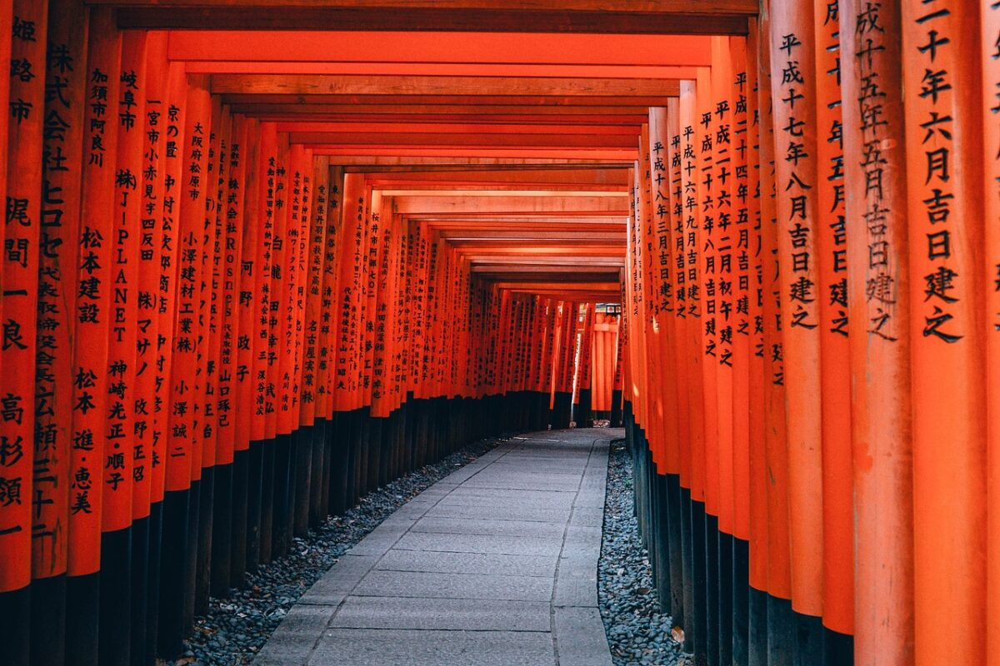

Japón

Japón, conocido como el "País del Sol Naciente", es un archipiélago situado en el este de Asia, compuesto por cuatro islas principales: Honshu, Hokkaido, Kyushu y Shikoku, además de miles de islas más pequeñas.
Tiene una población de aproximadamente 125 millones de habitantes, con Tokio, su capital, como una de las ciudades más pobladas del mundo. Japón es conocido por su combinación única de tradiciones milenarias y tecnología avanzada, lo que lo convierte en un destino fascinante para millones de visitantes cada año.